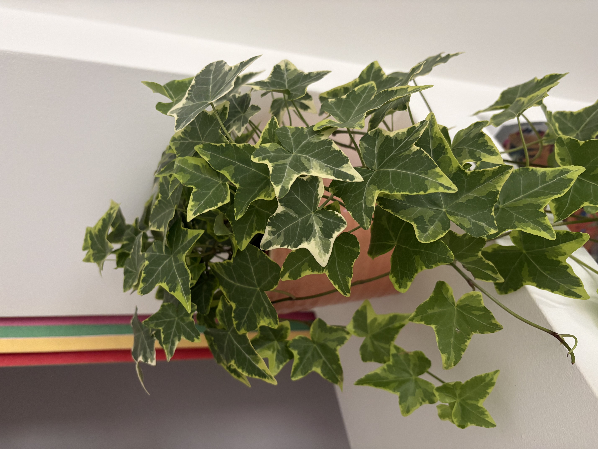
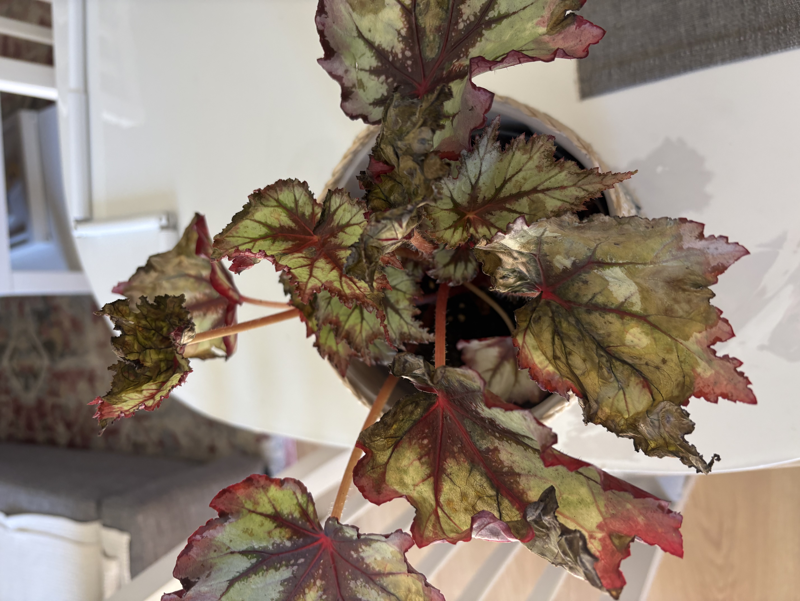
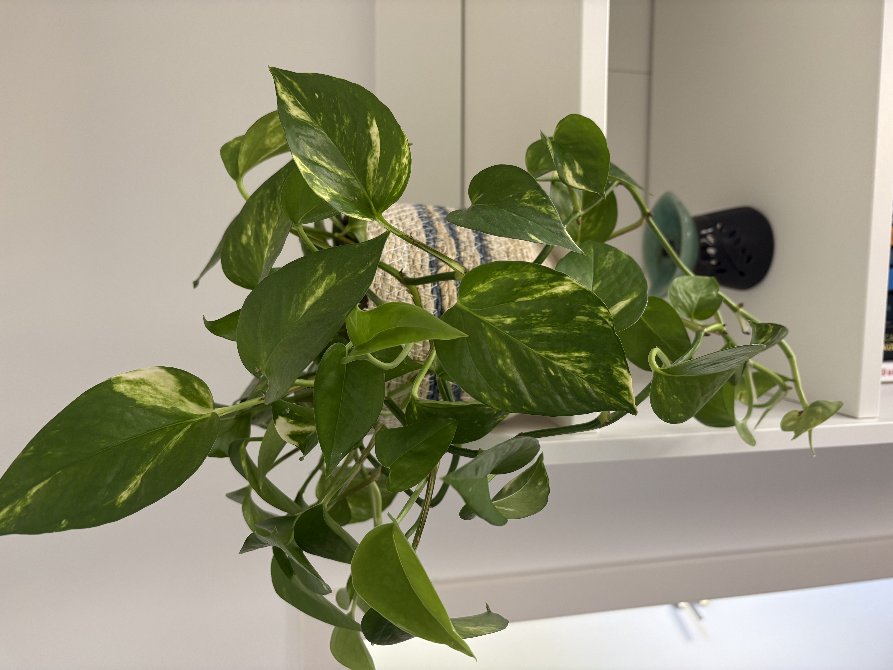
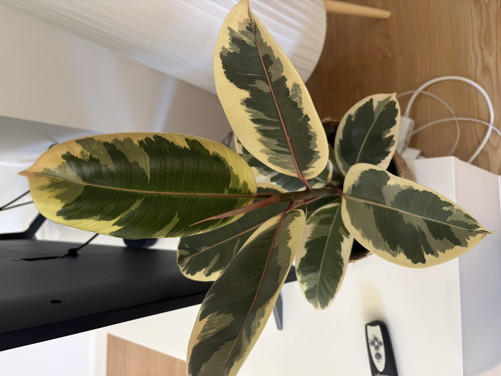
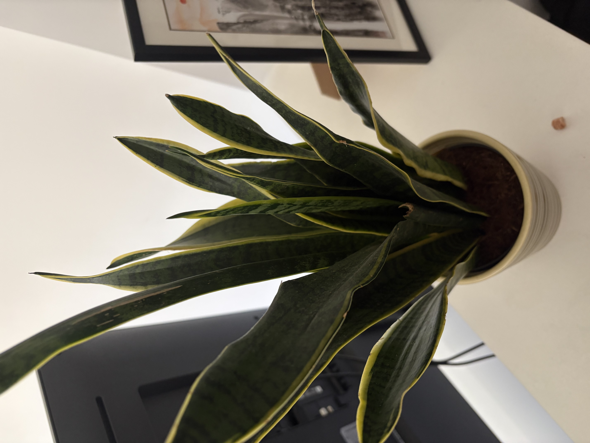
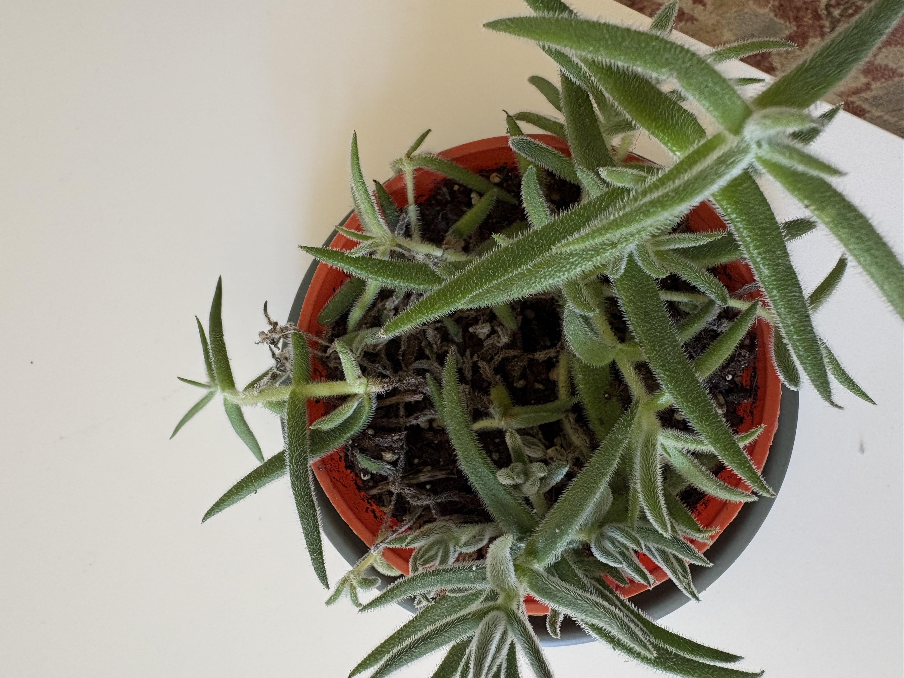
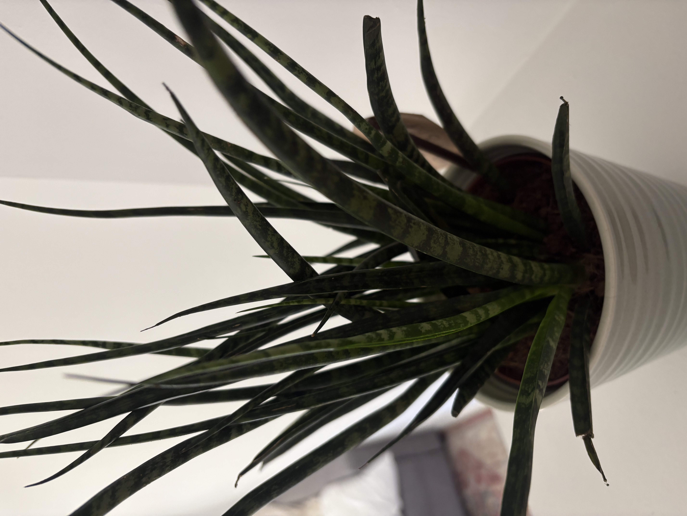

Guia de Cuidados
Luz · Água · Amor — tudo o que as tuas plantas precisam

01Araliaceae
Exposição Solar
Luz indireta a sombra parcial. Prefere ambientes mais frescos e luminosos sem sol direto. Variedades com folha verde escura aguentam melhor a sombra.
Rega
Manter o solo levemente húmido — regar quando a camada superficial estiver seca. A cada 5–10 dias. Gosta de humidade; pulverizar as folhas regularmente é benéfico.

02Begoniaceae
Exposição Solar
Luz indireta brilhante a média. Evitar sol direto que queima as folhas decorativas. Um lugar junto a uma janela virada a norte ou leste é ideal para preservar as cores vibrantes.
Rega
Regar quando os primeiros 2–3 cm do solo estiverem secos, a cada 7–10 dias. Evitar molhar as folhas para prevenir fungos. Prefere humidade elevada no ambiente — usar um tabuleiro com pedras e água.

03Araceae
Exposição Solar
Luz indireta média a baixa. Adapta-se muito bem a ambientes com pouca luz. Folhas variegadas precisam de mais luz para manter o padrão.
Rega
Regar quando o topo do solo (2–3 cm) estiver seco — aproximadamente a cada 1–2 semanas. Evitar encharcamento para prevenir apodrecimento das raízes.

04Moraceae
Exposição Solar
Luz indireta brilhante. Para manter as cores brancas e rosas das folhas variegadas é essencial boa luminosidade. Evitar sol direto.
Rega
Regar quando os primeiros 3–5 cm do solo estiverem secos, a cada 1–2 semanas. Pulverizar as folhas para aumentar a humidade. Não tolera raízes encharcadas.

05Asparagaceae
Exposição Solar
Luz indireta a sombra parcial. Tolera pouca luz mas cresce melhor com luz indireta brilhante. Evitar sol direto intenso.
Rega
Regas espaçadas — a cada 2–4 semanas no inverno, 1–2 semanas no verão. Deixar o solo secar completamente entre regas. Muito tolerante à seca.

06Asphodelaceae · Suculenta
Exposição Solar
Luz indireta brilhante. Ao contrário da maioria das suculentas, tolera bem a sombra parcial. Sol direto intenso pode queimar as folhas e deixá-las amareladas. Perfeita para interior.
Rega
Regar apenas quando o solo estiver completamente seco — a cada 2–3 semanas no verão, uma vez por mês no inverno. Suculenta típica: muito mais tolerante ao esquecimento do que ao excesso de água.

07Asparagaceae
Exposição Solar
Extremamente adaptável — suporta desde sombra profunda a sol direto. O crescimento é mais rápido com luz indireta brilhante. Uma das plantas mais resistentes à sombra.
Rega
Muito resistente à seca — regar apenas quando o solo estiver completamente seco. No inverno pode bastar uma rega por mês. O excesso de água é o principal risco.